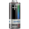

TP-SMAPI
Dieser Artikel wurde für die folgenden Ubuntu-Versionen getestet:
Ubuntu 16.04 Xenial Xerus
Ubuntu 14.04 Trusty Tahr
Artikel für fortgeschrittene Anwender
Dieser Artikel erfordert mehr Erfahrung im Umgang mit Linux und ist daher nur für fortgeschrittene Benutzer gedacht.
Zum Verständnis dieses Artikels sind folgende Seiten hilfreich:

Notebooks von IBM/Lenovo (ThinkPads) besitzen eine proprietäre Schnittstelle namens "SMAPI BIOS" (System Management Application Program Interface), die über den Umfang von ACPI hinausgehende Möglichkeiten zur Hardwaresteuerung bietet:
tp_smapi: Kontrolle des Akkuladevorgangs und erweiterter Akkustatus
hdaps: siehe Festplattenschutz
tp-smapi ist nicht zuständig für das Schalten der Funkgeräte, Hotkeys, Temperaturanzeige sowie die Lüftersteuerung. Darum kümmert sich das Kernelmodul thinkpad_acpi.
Benutzer folgender Modelle sollten den Abschnitt Besonderheiten beachten:
ThinkPad Edge, L, SL (ab SL410/510)
ThinkPad T420(s), T520, W520, X220, E320
Inkompatible Modelle, auf denen tp-smapi generell nicht funktioniert:
alle Nicht-ThinkPad-Baureihen von Lenovo (z.B. Ideapad-Reihe)
ThinkPad SL300/400/500
ThinkPad X121e
ThinkPad L430, L530, T430(s), T530, W530, X230, S430 sowie alle neueren Baureihen – siehe Alternative tpacpi-bat
Die in tp-smapi enthaltenen Kernelmodule tp_smapi und hdaps machen diese Steuerungsmöglichkeiten über die sysfs-Schnittstelle als Dateien unterhalb von /sys/devices/platform/smapi/ und /sys/devices/platform/hdaps/ zugänglich.
Beide Kernelmodule verwenden ein drittes Modul thinkpad_ec für den Zugriff auf den sog. "Embedded Controller", der SMAPI hardwareseitig implementiert.
Installation¶
tp-smapi ist in den Ubuntu-Paketquellen verfügbar. Zu installieren [1] ist das Paket
tp-smapi-dkms
 mit apturl
mit apturl
Paketliste zum Kopieren:
sudo apt-get install tp-smapi-dkms
sudo aptitude install tp-smapi-dkms
Ab Ubuntu 16.04.2 mit HWE-Kernel 4.8 erhält man bei der Installation des Pakets folgende Fehlermeldung:
Error! Bad return status for module build on kernel: 4.8.0-46-generic (x86_64)
Zur Behebung lädt man das neuere Paket aus Ubuntu 16.10 herunter und installiert es von Hand [1].
Kernelmodul manuell laden¶
Um die sysfs-Schnittstelle nutzen zu können, muss nach der Installation noch das Kernelmodul tp_smapi geladen werden.
Das Terminal-Kommando [2]
sudo modprobe -v tp_smapi
lädt die Module tp_smapi und thinkpad_ec und produziert im Erfolgsfall folgende Ausgabe:
insmod /lib/modules/KERNELVERSION/updates/dkms/thinkpad_ec.ko insmod /lib/modules/KERNELVERSION/updates/dkms/tp_smapi.ko
Problembehebung¶
Erscheint beim obigen Kommando hingegen die Fehlermeldung
insmod /lib/modules/KERNELVERSION/updates/dkms/thinkpad_ec.ko WARNING: Error inserting thinkpad_ec (/lib/modules/KERNELVERSION/updates/dkms/thinkpad_ec.ko): No such device or address FATAL: Error inserting tp_smapi (/lib/modules/KERNELVERSION/updates/dkms/tp_smapi.ko): No such device or address
kann man die Ursache weiter eingrenzen mit
dmesg | grep thinkpad_ec
... thinkpad_ec: no ThinkPad embedded controller!
so handelt es sich entweder um ein sehr altes ThinkPad-Modell, das tp-smapi nicht unterstützt (siehe tp-smapi  ) oder um ein ganz neues Modell. Im zweiten Fall hilft der Abschnitt ThinkPad T420(s), T520, W520, X220 weiter.
) oder um ein ganz neues Modell. Im zweiten Fall hilft der Abschnitt ThinkPad T420(s), T520, W520, X220 weiter.
Erscheint die Meldung
... thinkpad_ec: cannot claim IO ports 0x1600-0x161f... consider using force_io=1
sollte man einzeln in der genannten Reihenfolge die nachfolgenden Lösungsmöglichkeiten durchtesten und jeweils den obigen Ladebefehl wiederholen.
Hardware Reset¶
ThinkPad herunterfahren und ausschalten
Netzteil entfernen
Akku entfernen
Einschalttaste mindestens 30 Sekunden gedrückt halten
Stromversorgung wieder herstellen und das ThinkPad starten
Achtung!
Beim ThinkPad X121e kann der Hardware-Reset dazu führen, dass das Notebook überhaupt nicht mehr startet (2 Fälle im Forum aufgetreten) und das Gerät in die Werkstatt muss. Alle anderen Modelle sind von diesem Problem jedoch nicht betroffen.
BIOS Default Settings¶
Nach dem Einschalten beim Erscheinen des ThinkPad-Logos mit F1 ins BIOS Setup
F9 (Default Settings) ⏎ (Yes)
F10 (Save and Exit) ⏎ (Yes)
Nach dem Erscheinen des ThinkPad-Logos durch Halten der Einschalttaste (ca. 10 Sekunden) ThinkPad ausschalten
Wieder einschalten
Achtung!
Bei einem im UEFI-Modus installiertem Ubuntu – erkennbar z.B. an der Existenz des Verzeichnisses /sys/firmware/efi – wird durch den Aufruf der Default Settings der Booteintrag gelöscht, dadurch startet das System nicht mehr. Den Booteintrag kann man mittels eines Live-Systems (Live-CD/Live-USB) per efibootmgr wiederherstellen.
Manchmal liegt das Problem auch an einer veralteten BIOS-Version. Auf der Herstellerseite  werden BIOS-Updates in Form von bootfähigen ISO-Images angeboten. Nach jedem BIOS-Update sollte man unbedingt wie oben beschrieben die "Default Settings" aktivieren.
werden BIOS-Updates in Form von bootfähigen ISO-Images angeboten. Nach jedem BIOS-Update sollte man unbedingt wie oben beschrieben die "Default Settings" aktivieren.
Modulparameter¶
Mit einem Editor mit Root-Rechten [3] legt man die Datei /etc/modprobe.d/tp-smapi.conf mit folgendem Inhalt an:
options thinkpad_ec force_io=1
Inkompatible Hardware¶
Bringen die vorstehenden Maßnahmen keinen Erfolg, dann hat man eine inkompatible Hardware.
Kernelmodul automatisch beim Systemstart laden¶
Wenn das manuelle Laden erfolgreich getestet wurde, kann man es durch Einfügen [3] der folgenden Zeile in /etc/modules automatisieren:
tp_smapi
Hinweis:
Benutzer von TLP (siehe Links) brauchen diesen Schritt nicht durchzuführen, da TLP tp_smapi automatisch lädt.
Akkufunktionen¶
Status und Einstellungen sind je Akku als Dateien unterhalb eines Verzeichnisses abgebildet:
| Tabelle 1: Akkuverzeichnisse | |
| Akku | Verzeichnis |
| Hauptakku | /sys/devices/platform/smapi/BAT0/ |
| Ultrabayakku | /sys/devices/platform/smapi/BAT1/ |
Die Bedeutung der einzelnen Dateien erklärt die folgende Tabelle (aus Gründen der Übersichtlichkeit wird nur eine Auswahl wiedergegeben):
| Tabelle 2: Akkufunktionen | ||||
| Datei | Schreibbar | Funktion | Einheit | Bemerkung |
current_avg | N | Akkustrom (Durchschnitt) | mA | Durchschnitt der letzten Minute; positiver Wert=Akku wird geladen, negativer Wert=Akku wird entladen |
current_now | N | Akkustrom (momentan) | mA | positiver Wert=Akku wird geladen, negativer Wert=Akku wird entladen |
cycle_count | N | Anzahl Ladezyklen | 1 | als Ladezyklus zählt eine vollständige Entladung des Akkus, d.h. von 100 % auf 0 %, oder z.B. zweimaliges Entladen von 80 % auf 30 %, gefolgt von einer Aufladung auf den Ursprungswert |
design_capacity | N | Vorgesehener Energieinhalt | mWh | Designkapazität (mAh) · Nennspannung (V) |
design_voltage | N | Nennspannung | mV | |
first_use_date | N | Datum der Erstverwendung | JJJJ-MM-TT | |
force_discharge | J | Entladung erzwingen | - | 0=Inaktiv, 1=Entladen; Zwangsentladung ist nur bei angeschlossenem Netzteil möglich; der Entladevorgang wird bei leerem Akku automatisch beendet und der Akku anschließend bis zur eingestellten oberen Ladeschwelle (s.u.) geladen |
inhibit_charge_minutes | J | Ladevorgang unterbrechen für definierte Zeitspanne | min | |
installed | N | Akku vorhanden | - | 0=nein, 1=ja |
last_full_capacity | N | Energieinhalt nach letzter vollständiger Aufladung | mWh | Tatsächlich nutzbarer Energieinhalt; dieser Wert kann bei neuem Akku über dem vorgesehenen (s.o.) liegen und sinkt im Verlauf des Akkulebens durch Verschleiß allmählich ab |
manufacture_date | N | Herstellungsdatum | JJJJ-MM-TT | |
manufacturer | N | Hersteller der Akkuzellen | - | |
power_avg | N | Leistungsaufnahme/-abgabe (Durchschnitt) | mW | Durchschnitt der letzten Minute; positiver Wert=Akku wird geladen, negativer Wert=Akku wird entladen |
power_now | N | Leistungsabgabe (momentan) | mW | positiver Wert=Akku wird geladen, negativer Wert=Akku wird entladen |
remaining_capacity | N | momentaner Energieinhalt | mWh | |
remaining_charging_time | N | verbleibende Ladezeit | min | |
remaining_percent | N | momentaner Ladestand | % | |
remaining_running_time | N | Restlaufzeit (Durchschnitt) | min | Schätzung aus Durchschnitts-Endladestrom (s.o.) |
remaining_running_time_now | N | Restlaufzeit (momentan) | min | Schätzung aus momentanem Endladestrom (s.o.) |
state | N | Akkustatus | - | charging=Akku wird geladen, discharging=Akku wird entladen, idle=keine Änderung des Ladestands |
start_charge_thresh | J | untere Ladeschwelle | % | Das Aufladen startet beim Anschließen des Netzteils nur dann, wenn die Ladung unterhalb dieses Werts liegt; Werkseinstellung: 96 % |
stop_charge_thresh | J | obere Ladeschwelle | % | Beim Erreichen dieses Werts endet der Aufladevorgang; Werkseinstellung: 100 % |
temperature | N | Akkutemperatur | °C / 1000 | |
voltage | N | Akkuspannung (momentan) | mV | |
Anwendungsbeispiele¶
Akkudaten auslesen¶
Alle in Tabelle 2 aufgeführten Daten lassen sich per Terminalkommando auslesen. Entweder einzeln mit
cat /sys/devices/platform/smapi/BATx/DATEI
oder alles zusammen mit
grep '.*' /sys/devices/platform/smapi/BATx/*
Stromverbrauch anzeigen¶
Folgendes Kommando gibt alle 5 Sekunden die am Hauptakku gemessene momentane Leistungsaufnahme aus:
watch -n 5 cat /sys/devices/platform/smapi/BAT0/power_now
Beenden mit Strg + C .
Ladeschwellen einstellen¶
Um beim Hauptakku den Ladebeginn auf 75% und das Ladeende auf 80% der Akkukapazität festzulegen, verwendet man folgende Kommandos:
sudo sh -c "echo 75 > /sys/devices/platform/smapi/BAT0/start_charge_thresh" sudo sh -c "echo 80 > /sys/devices/platform/smapi/BAT0/stop_charge_thresh"
Hinweise:
Die untere Ladeschwelle muss mindestens 4 Prozentpunkte kleiner als die obere sein; von dieser Regel abweichende Werte werden von tp-smapi eigenständig angepaßt
Die so eingestellten Ladeschwellen werden erst wirksam, nachdem das ThinkPad einmal heruntergefahren und ausgeschaltet wurde (siehe auch sofort aktivieren)
Die Ladeschwellen bleiben beim Ausschalten des ThinkPads erhalten
Die Ladeschwellen gehen beim Entnehmen des Akkus verloren und müssen nach dem Wiedereinsetzen neu geschrieben werden (gilt nur für ältere Modelle)
Möchte man - z.B. aufgrund des vorstehenden Hinweises zum Akkuwechsel - die Ladeschwellen bei jedem Systemstart erneut setzen, nimmt man folgende Zeilen in rc.local auf [3] :
echo 75 > /sys/devices/platform/smapi/BAT0/start_charge_thresh echo 80 > /sys/devices/platform/smapi/BAT0/stop_charge_thresh
Ladeschwellen aktivieren¶
Bei älteren ThinkPad-Modellen greifen die so geschriebenen Akkuladeschwellen nicht sofort. Man aktiviert sie entweder durch Herunterfahren und Ausschalten des ThinkPads oder indem man im laufenden Betrieb force_discharge für kurze Zeit (im Beispiel 2s) auf 1 setzt:
cd /sys/devices/platform/smapi/BAT0/ sudo sh -c "echo 1 > force_discharge; sleep 2; echo 0 > force_discharge"
Achtung!
In einem Fall eines ThinkPads mit defektem Akku wurde beobachtet, dass diese Vorgehensweise zu einer Unterbrechung der Stromversorgung und damit zum sofortigen Neustart führte. Daher sollte das Kommando keinesfalls in den Systemstart eingebaut werden.
Akku rekalibrieren¶
Das Rekalibrieren sorgt dafür, dass die Elektronik im Akkupack Ladezustand und Kapazität korrekt wiedergibt. Verschlissene oder defekte Akkuzellen werden dadurch nicht repariert.
Der Rekalibrierungsvorgang besteht aus folgenden Schritten:
Ladeende auf 100% festlegen (Vorgehensweise s.o.)
Akku vollständig entladen (mit angeschlossenem Netzteil)
Akku vollständig aufladen
Das folgende Kommando leitet das Entladen des Hauptakkus ein (nur bei angeschlossenem Netzteil möglich!):
sudo sh -c "echo 1 > /sys/devices/platform/smapi/BAT0/force_discharge"
Nach dem Ende des Entladevorgangs wechselt der Inhalt der Datei automatisch wieder auf 0 und der Ladevorgang bis zur eingestellten oberen Ladeschwelle beginnt.
Die verbleibende Kapazität kann man während des Entladens beobachten mit:
cd /sys/devices/platform/smapi/BAT0/ while [ "$(cat force_discharge)" = "1" ]; do cat remaining_capacity; sleep 5; done
Besonderheiten¶
ThinkPad Edge, L, SL (ab SL410/510)¶
Bei diesen Baureihen entsprechen die ausgelesenen Werte für die Akkuladeschwellen nicht den zuvor geschriebenen Werten.
So liefert z.B. das Setzen der Ladeschwellen auf start_charge_thresh = 75 / stop_charge_thresh = 80, beim Auslesen stattdessen 81 / 80. Wenn man zuerst stop_charge_thresh und danach start_charge_thresh schreibt, ist das Ergebnis 75 / 74. Benutzer berichten jedoch, dass trotzdem die zuvor geschriebenen Werte wirksam sind.
ThinkPad T420(s), T520, W520, X220, E320¶
Bei diesen Modellen (mit Intel Sandy Bridge Prozessor) werden derzeit die Akkufunktionen start_charge_thresh und force_discharge nicht unterstützt, wobei bisher nicht bekannt ist, ob es sich um eine Limitierung der Hardware oder ein Softwareproblem handelt. Eine Alternative stellt das unten erwähnte tpacpi-bat dar (außer E320). Der Festplattenschutz funktioniert (außer E320).
Leider entfällt bei den betroffenen Modellen beim Schreiben von stop_charge_thresh auch die automatische Anpassung von start_charge_thresh auf einen Wert kleiner oder gleich stop_charge_thresh - 4. Dies kann zu häufigen kurzen Ladevorgängen und erhöhtem Akkuverschleiß führen.
ThinkPad T430(s), T530, W530, X230, S430¶
Bei diesen Modellen (mit Intel Ivy Bridge Prozessor) und allen neueren Baureihen schlägt das Laden von tp_smapi mit der Meldung
insmod /lib/modules/KERNELVERSION/updates/dkms/thinkpad_ec.ko WARNING: Error inserting thinkpad_ec (/lib/modules/KERNELVERSION/updates/dkms/thinkpad_ec.ko): No such device or address FATAL: Error inserting tp_smapi (/lib/modules/KERNELVERSION/updates/dkms/tp_smapi.ko): No such device or address
fehl. Eine Lösung für tp-smapi ist bisher nicht bekannt, als Alternative für die Ladeschwellen bietet sich das nachfolgend erwähnte tpacpi-bat an.
Alternative tpacpi-bat¶
Für ThinkPad-Modelle ab der Sandy-Bridge-Generation (oder neuer), bei denen tp-smapi nur unvollständig oder gar nicht mehr funktioniert (s. oben, Ausnahme: E320), gibt es als Alternative für das Setzen der Ladeschwellen das Perl-Skript tpacpi-bat .
Für den Einsatz dieses Skripts greift man am einfachsten auf das Stromspartool TLP zurück, das tpacpi-bat bereits mitbringt. TLP bietet eine einheitliche Schnittstelle zu den oben beschriebenen ThinkPad-Akkufunktionen und verwendet je nach Hardware autom. entweder tp-smapi oder tpapci-bat.
Hinweis!
Zusätzliche Fremdquellen können das System gefährden.
Links¶
Intern¶
Festplattenschutz – Installation und Konfiguration von HDAPS (Hard Disk Active Protection System)
thinkpad_acpi – ThinkPad-spezifisches Kernelmodul zum Schalten der Funkgeräte, Hotkeys, Temperaturanzeige und Lüftersteuerung
Extern¶
tp-smapi bei Github – Repository des Debian Package Maintainers (hier werden mittlerweile Änderungen gepflegt)
tp-smapi
– Artikel bei thinkwiki.orgtpacpi-bat
– Perl-Skript zum Setzen der Ladeschwellen bei neueren ThinkPadsacpi-call
– Kernelmodul das von tpacpi-bat vorausgesetzt wirdTLP
– Stromspartool mit Funktionen zur Anzeige des Akkustatus, Setzen der Ladeschwellen und Rekalibrieren des AkkusTLP FAQ ThinkPad-Akku
– vertiefende FAQ zu Akkufunktionen, Ladeschwellen sowie zur Fehleranalyse bei tp-smapi und tpacpi-batthinkwatt
– einfaches Tool zur Aufzeichnung und grafischen Anzeige des StromverbrauchsLithium-Ionen-Akkumulator – Wikipedia
- Erstellt mit Inyoka
-
 2004 – 2017 ubuntuusers.de • Einige Rechte vorbehalten
2004 – 2017 ubuntuusers.de • Einige Rechte vorbehalten
Lizenz • Kontakt • Datenschutz • Impressum • Serverstatus -
Serverhousing gespendet von